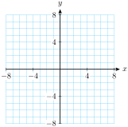
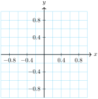
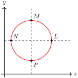
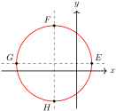

Section 1.3 Circles
Subsection The Distance Formula
Delbert is hiking in the Santa Monica mountains, and he would like to know the distance from the Sycamore Canyon trail head, located at 12-C on his map, to the Coyote Trail junction, located at 8-F, as shown below.

Each interval on the map represents one kilometer. Delbert remembers the Pythagorean theorem, and uses the map coordinates to label the sides of a right triangle. The distance he wants is the hypotenuse of the triangle, so
The straight-line distance to Coyote junction is about 5 kilometers.
The formula for the distance between two points is obtained in the same way.
We first label a right triangle with points \(P_{1}\) and \(P_{2}\) on opposite ends of the hypotenuse. (See the figure at right.) The sides of the triangle have lengths \(\abs{x_2-x_1}\) and \(\abs{y_2-y_1}\text{.}\) We can use the Pythagorean theorem to calculate the distance between \(P_{1}\) and \(P_{2}\text{:}\)
Taking the (positive) square root of each side of this equation gives us the distance formula.
Distance Formula.
The distance \(d\) between two points \(P_{1}(x_1, y_1)\) and \(P_{2}(x_2, y_2)\) is
Example 1.31.
Find the distance between \((2,-1)\) and \((4,3)\text{.}\)
We substitute \((2,-1)\) for \((x_1, y_1)\) and \((4,3)\) for \((x_2, y_2)\) in the distance formula to obtain
We can use a calculator to obtain an approximation for this value, and find
Caution 1.32.
In the previous example, the radical \(\sqrt{4+16}\) cannot be simplified to \(\sqrt{4}+\sqrt{16}\text{.}\) (Do you remember why not?)
Checkpoint 1.33.
Find the distance between the points \((-5,3)\) and \((3,-9)\text{.}\)
Plot the points on a Cartesian grid and show how the Pythagorean theorem is used to calculate the distance.
\(4\sqrt{13}\)
Subsection Equation for a Circle
A circle is the set of all points in a plane that lie at a given distance, called the radius, from a fixed point called the center. We can use the distance formula to find an equation for a circle.
The circle shown below has its center at the origin, \((0,0)\text{,}\) and its radius is \(r\text{.}\)
Now, the distance from the origin to any point \(P(x,y)\) on the circle is \(r\text{.}\) Therefore,
or, squaring both sides,
Because every point on the circle must satisfy this equation, we have found an equation for the circle.
Circle.
The equation for a circle of radius \(r\) centered at the origin is
Example 1.34.
Find two points on the circle \(x^2+y^2=4\) with \(y\)-coordinate \(-1\text{.}\)
We substitute \(x=\alert{-1}\) into the equation for the circle, and solve for \(y\text{.}\)
The points are \((-1, \sqrt{3})\) and \((-1,\sqrt{3})\text{,}\) as shown at right. Note that \(\sqrt{3} \approx 1.732\text{.}\)
Checkpoint 1.35.
Find the coordinates of two points on the circle \(~~x^2+y^2=1~~\) with \(y\)-coordinate \(\dfrac{1}{2}\text{.}\)
\(\left(\dfrac{\sqrt{3}}{2},\dfrac{1}{2}\right)\text{,}\) \(\left(\dfrac{-\sqrt{3}}{2},\dfrac{1}{2}\right)\)
Definition 1.36. Unit Circle.
The circle in the exercise above, \(~~\blert{x^2+y^2=1},~~\) which is centered at the origin and has radius 1 unit, is called the unit circle.
Subsection Rational and Irrational Numbers
Every common fraction, such as \(\dfrac{3}{4}\text{,}\) can be written in many equivalent forms, including a decimal form. For example,
where \(0.\overline{45}\) is the repeating decimal \(0.45454545....\)
Because the fraction bar denotes division, a fraction is a quotient of two integers, and we can calculate its decimal form by dividing the denominator into the numerator.
Definition 1.37. Rational Number.
Any number (including fractions) that can be written as a quotient of two integers \(~~\dfrac{a}{b},~~\text{where}~~ b\not=0,~~\) is called a rational number.
The decimal form of a rational number is either a terminating decimal, such as \(0.75\text{,}\) or a repeating decimal, such as \(0.\overline{45}\text{.}\) Thus, we can always write down an exact decimal equivalent for a rational number, although we may choose to round off a particularly long or unwieldy decimal. For example,
Caution 1.38.
Note that \(0.43\) is not exactly equal to \(\dfrac{3}{7}\text{;}\) it is an approximation for \(\dfrac{3}{7}\text{,}\) just as \(0.33\) is an approximation for \(\dfrac{1}{3}\text{.}\) In our work, it will be important to distinguish between exact values and approximations.
Definition 1.39. Irrational Number.
An irrational number is one that cannot be written as a quotient of two integers \(\dfrac{a}{b}\text{,}\)where \(b\not=0\text{.}\)
Examples of irrational numbers are \(\sqrt{3}\text{,}\) \(\sqrt[3]{586}\text{,}\) and \(\pi\text{.}\) The decimal form of an irrational number is nonterminating and nonrepeating. The first few digits of the examples mentioned are
but none of these decimal forms ever ends. Thus, we cannot write down an exact decimal equivalent for an irrational number. The best we can do is give a decimal approximation, no matter how many digits we include.
Example 1.40.
Which values are exact, and which are approximations?
\(\displaystyle \dfrac{7}{32}\rightarrow 0.21875\)
\(\displaystyle \sqrt{8}\rightarrow 2.828427125\)
\(\displaystyle \sqrt{0.16}\rightarrow 0.4\)
\(\displaystyle \dfrac{\pi}{2}\rightarrow 1.570796327\)
Because \(\dfrac{7}{32}\) is a rational number, it has an exact decimal equivalent. Divide 7 by 32 to see that \(\dfrac{7}{32}=0.21875\text{.}\)
Because 8 is not a perfect square, \(\sqrt{8}\) is irrational, so \(2.828427125\) is not the exact value of \(\sqrt{8}\text{.}\)
\(\sqrt{0.16}=\sqrt{\dfrac{16}{100}}=\dfrac{4}{10}=0.4\text{,}\) so this value is exact.
Because \(\dfrac{\pi}{2}\) is an irrational number, it has no decimal equivalent, so \(1.570796327\) is an approximation.
Checkpoint 1.41.
For which numbers can you give an exact decimal equivalent?
\(\displaystyle \dfrac{\sqrt{3}}{2}\)
\(\displaystyle \dfrac{\sqrt{16}}{3}\)
\(\displaystyle 2\pi\)
\(\displaystyle \dfrac{25}{17}\)
b, d
Subsection Circumference and Area
Recall from geometry that the circumference of a circle is proportional to its radius.
Circumference of a Circle.
The circumference of a circle of radius \(r\) is given by
The number \(\pi\) gives the ratio of the circumference of any circle to its diameter. It is an irrational number, \(\pi\approx 3.14159\text{.}\)
The length of a portion, or arc, of a circle, is called its arclength.
Example 1.42.
Francine baked an apple pie with diameter 8 inches. If Delbert cuts himself a 60° wedge, what is the arclength of the curved edge?
The radius of the pie is 4 inches, so its circumference is \(2\pi (4)\) inches.
A 60° wedge, shown at right, is \(\dfrac{1}{6}\) of the entire pie, so its edge is \(\dfrac{1}{6}\) of the circumference. The exact length of the arc is thus
Using a calculator, we find that \(\dfrac{4\pi}{3}=4.19\) rounded to two decimal places, so the length of the curved edge is between 4 and 4\(\frac{1}{2}\) inches.
Checkpoint 1.43.
What is the arclength of the curved edge of a 60° wedge cut from a blueberry pie of diameter 10 inches?
\(\dfrac{5\pi}{3} \approx 5.24~~\text{inches}\)
The area of a circle is proportional to the square of its radius.
Area of a Circle.
The area of a circle of radius \(r\) is given by
A portion of a circle shaped like a pie-shaped wedge is called a sector.
Example 1.44.
What is the area of Delbert's slice of apple pie in the previous example?
As we saw in the previous example, Delbert's sector of the pie is \(\dfrac{1}{6}\) of the entire pie, so its area \(\dfrac{1}{6}\) of the area of the whole pie, or
The area of the wedge is \(\dfrac{8\pi}{3}\text{,}\) or about 8.34 square inches.
Checkpoint 1.45.
What is the area of a 60° wedge cut from a blueberry pie of diameter 10 inches?
\(\dfrac{25\pi}{6} \approx 13.09~~\text{square inches}\)
Review the following skills you will need for this section.
Algebra Refresher 1.4.
True of False.
1. \(\sqrt{a^2+b^2}=a+b\)
4. \(\sqrt{2x}\sqrt{3y}=\sqrt{6xy}\)
7. \(\sqrt{\dfrac{x}{4}}=\dfrac{\sqrt{x}}{2}\)
2. \(\sqrt{36+64}=6+8\)
5. \(\sqrt{5x}+\sqrt{3x}=\sqrt{8x}\)
8. \(\sqrt{\dfrac{3}{2}}=\dfrac{\sqrt{6}}{2}\)
3. \(\sqrt{16x^4}=4x^2\)
6. \(\sqrt{4+N}=2+\sqrt{N}\)
\(\underline{\qquad\qquad\qquad\qquad}\)
Algebra Refresher Answers
False
False
True
True
False
False
True
True
Subsection Section 1.3 Summary
Subsubsection Vocabulary
Look up the definitions of new terms in the Glossary.
Rational number
Irrational number
Repeating decimal
Circle
Radius
Unit circle
Circumference
Arclength
Subsubsection Concepts
Distance Formula.
The distance \(d\) between two points \(P_{1}(x_1, y_1)\) and \(P_{2}(x_2, y_2)\) is
\begin{equation*} d=\sqrt{(x_2-x_1)^2+(y_2-y_1)^2} \end{equation*}Any number that can be written as a quotient of two integers \(~~\dfrac{a}{b},~~\text{where}~~ b\not=0,\) is called a rational number. The decimal form of a rational number is either a terminating decimal or a repeating decimal.
An irrational number is one that cannot be written as a quotient of two integers \(~~\dfrac{a}{b},~~\text{where}~~ b\not=0\text{.}\) We cannot write down an exact decimal equivalent for an irrational number.
A circle is the set of all points in a plane that lie at a given distance, called the radius, from a fixed point called the center.
Circle.
The equation for a circle of radius \(r\) centered at the origin is
\begin{equation*} x^2+y^2=r^2 \end{equation*}The circle \(~x^2+y^2=1~\text{,}\) which is centered at the origin and has radius 1 unit, is called the unit circle.
Circumference of a Circle.
The circumference of a circle of radius \(r\) is given by
\begin{equation*} C=2\pi r \end{equation*}Area of a Circle.
The area of a circle of radius \(r\) is given by
\begin{equation*} A=\pi r^2 \end{equation*}
Subsubsection Study Questions
Explain why the distance formula, \(d=\sqrt{(x_2-x_1)^2+(y_2-y_1)^2}\text{,}\) cannot be simplified to \((x_2-x_1)+(y_2-y_1)\text{.}\)
What is a unit circle, and what is its equation?
Can you give an exact decimal value for \(\pi\text{?}\)
What is the arclength of a semicircle of radius \(r\text{?}\)
Subsubsection Skills
Practice each skill in the Homework Problems listed.
Find the distance between two points #1-18
Distinguish between exact values and approximations #19-24
Graph a circle #25-30, 35-40
Find and use the equation for a circle #31-34, 39-42, 55-56
Find the length of a fraction of a circle #35-38, 43-54
Find the area of a sector of a circle #43-50
Exercises Homework 1.3
1.
Leanne is sailing and is currently 3 miles west and 5 miles south of the harbor. She heads directly towards an island that is 8 miles west and 7 miles north of the harbor. How far is Leanne from the island?
2.
Dominic is 100 meters east and 250 meters north of Kristen. He is walking directly towards a tree that is 220 meters east and 90 meters north of Kristen. How far is Dominic from the tree?
Exercise Group.
For Problems 3–6, find the distance between the points. Give your answer as an exact value, then as a decimal rounded to hundredths.
3.
4.
5.
6.
Exercise Group.
For Problems 7–12, find the distance between the points.
7.
\(~(1,1),~(4,5)\)
8.
\(~(-1,1),~(5,9)\)
9.
\(~(2,-3),~(-2,-1)\)
10.
\(~(5,-4),~(-1,1)\)
11.
\(~(3,5),~(-2,5)\)
12.
\(~(-2,-5),~(-2,3)\)
13.
Sketch a triangle with vertices \((10,1),~(3,1),~(5,9)\) and find its perimeter. Round your answer to tenths.
14.
Sketch a triangle with vertices \((-1,5),~(8,-7),~(4,1)\) and find its perimeter. Round your answer to tenths.
15.
Write an expression for the distance between the points \((x,y)\) and \((-3,4)\text{.}\)
Write an equation that says "the distance between the points \((x,y)\) and \((-3,4)\) is 5 units."
16.
Write an expression for the distance between the points \((-6,-1)\) and \((h,k)\text{.}\)
Write an equation that says "the point \((-6,-1)\) is 3 units from the point \((h,k)\text{.}\)"
Exercise Group.
Interpret the equations in Problems 17 and 18 as statements about distance.
17.
\(\sqrt{(x-4)^2+(y+1)^2}=3\)
18.
\(\sqrt{(-2-h)^2+(5-k)^2}=l\)
Exercise Group.
For Problems 19–22,
give an exact answer,
round your answer to hundredths.
19.
How long is the diagonal of a square whose side is 6 centimeters?
20.
How long is the side of a cube whose volume is 80 cubic feet?
21.
What is the area of a circle whose radius is 5 inches?
22.
What is the circumference of a circle whose radius is 5 meters?
Exercise Group.
In Problems 23 and 24, decide whether the decimal form is an exact value or an approximation.
23.
\(\displaystyle \dfrac{\sqrt{3}}{2}\rightarrow 0.866025\)
\(\displaystyle \dfrac{\sqrt{16}}{3}\rightarrow 1.333333\)
\(\displaystyle \dfrac{3\pi}{2}\rightarrow 4.712390\)
\(\displaystyle \dfrac{5}{7}\rightarrow 0.\overline{714285}\)
24.
\(\displaystyle \dfrac{\pi}{6}\rightarrow 0.52536\)
\(\displaystyle \dfrac{5}{32}\rightarrow 0.15625\)
\(\displaystyle \dfrac{\sqrt{196}}{32}\rightarrow 0.4375\)
\(\displaystyle \dfrac{\sqrt{8}}{4}\rightarrow 0.707107\)
25.
-
Complete the table of values for the equation \(x^2 + y^2 = 25.\)
\(x\) \(-5\) \(-4\) \(-3\) \(-2\) \(-1\) \(0\) \(1\) \(2\) \(3\) \(4\) \(5\) \(y\) \(\hphantom{0000} \) \(\hphantom{0000}\) \(\hphantom{0000}\) \(\hphantom{0000}\) \(\hphantom{0000} \) \(\hphantom{0000}\) \(\hphantom{0000}\) \(\hphantom{0000}\) \(\hphantom{0000} \) \(\hphantom{0000}\) \(\hphantom{0000}\) Plot the points and graph the equation.

26.
-
Complete the table of values for the equation \(x^2 + y^2 = 1.\)
\(x\) \(-1\) \(-0.8\) \(-0.6\) \(0\) \(0.6\) \(0.8\) \(1\) \(y\) \(\hphantom{0000} \) \(\hphantom{0000}\) \(\hphantom{0000}\) \(\hphantom{0000}\) \(\hphantom{0000} \) \(\hphantom{0000}\) \(\hphantom{0000}\) Plot the points and graph the equation.

27.
Sketch a graph of all points in the plane that lie 6 units from the origin.
Write an equation for your graph.
28.
Sketch a graph of all points in the plane that lie \(\sqrt{12}\) units from the origin.
Write an equation for your graph.
29.
Sketch a graph of all points in the plane that lie less than 3 units from the origin.
Write an inequality for your graph.
30.
Sketch a graph of all points in the plane that lie more than 5 units from the origin.
Write an inequality for your graph.
31.
Explain why the solutions of the equation \(x^2 +y^2 = 16\) must have \(-4 \le x \le 4\text{.}\)
What does part (a) tell you about the graph of the equation?
32.
Explain why the solutions of the equation \(x^2 +y^2 = 100\) must have \(-10 \le x \le 10\)
What does part (a) tell you about the graph of the equation?
33.
The point \((1,-3)\) lies on a circle centered at the origin. What is the radius of the circle?
34.
The point \((-2,\sqrt{6})\) lies on a circle centered at the origin. What is the radius of the circle?
Exercise Group.
For Problems 35–38,
Graph each equation.
Find the circumference of the circle.
35.
\(x^2 + y^2 = 36\)

36.
\(x^2 + y^2 = 16\)
37.
\(4x^2 +4y^2 = 16\)
38.
\(2x^2 + 2y^2 = 18\)
39.
Give the coordinates of two points on the circle in Problem 35 that have \(y=-4\text{.}\) Plot those points on your graph.
40.
Give the coordinates of two points on the circle in Problem 35 that have \(x=-2\text{.}\) Plot those points on your graph.
Exercise Group.
For Problems 41 and 43, find the coordinates of the points on the unit circle.
41.
42.
43.
A circular herb garden has diameter 40 feet, and is divided into 8 equal sectors.
What is the central angle of each sector?
What is the length of the circular edge of each sector?
What is the area of each sector?
44.
A dart board is 18 inches in diameter, divided into 20 sectors of equal size. (For this exercise, we will ignore the bulls-eye and the fact that the sectors are further subdivided.)
What is the central angle of each sector?
What is the length of the circular edge of each sector?
What is the area of each sector?
Exercise Group.
For Problems 45–50,
What fraction of one revolution is the central angle?
What is the area of the shaded sector?
What is the length of the shaded arc?
45.
46.
47.
48.
49.
50.
51.
South America stretches across \(30\degree\) of longitude at the equator, from Quito in Ecuador to the east coast of Brazil. (The figure at right shows a view of the earth from above the north pole.) The radius of the earth is about 3960 miles. How wide is South America at the equator?
52.
The radius of the earth is about 3960 miles. What distance will you cover if you travel north by one degree of latitude? (See the figure at right.) There are \(180\degree\) of latitude from the south pole to the north pole.
53.
The moon is about 240,000 miles from earth. It moves in a roughly circular orbit, completing one revolution in 28 days.
How far does the moon move around the earth in one day?
What is the speed of the moon relative to the earth, in miles per hour?
54.
The earth is about 93,000,000 miles from the sun, and its orbit is approximately circular.
How far does the earth move around the sun in one month?
What is the speed of the earth relative to the sun, in miles per day? (Assume a month has 30 days.)
55.
Use the distance formula to write an equation for the circle of radius 6 centered at the point \((3,-2)\text{.}\)
Use the distance formula to derive an equation for the circle of radius \(r\) centered at the point \((h,k)\text{.}\)
56.
Find the coordinates of the indicated points on each circle.
-
\(\displaystyle (x-4)^2 + (y-5)^2 = 9\)
 -
\(\displaystyle (x+3)^2 + (y-1)^2 = 25\)
